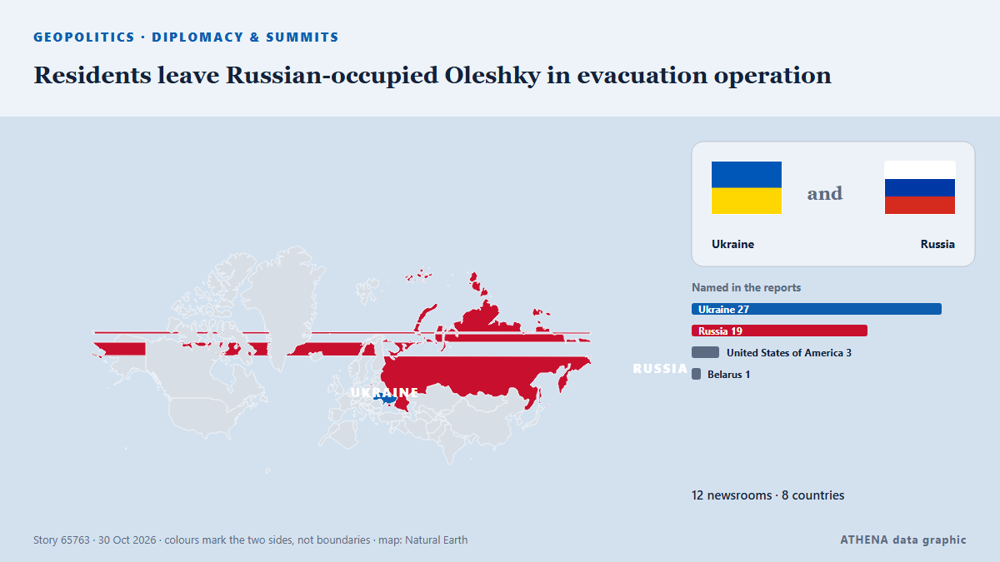

Residents leave Russian-occupied Oleshky in evacuation operation

Residents evacuated from the Russian-occupied Ukrainian town of Oleshky have left for Russia's Anapa city with a Ukrainian delegation, senior official David Arakhamia said Friday. из France 24 English
Независимые источники: 12 изданий в 8 странах, с 30 окт.; первым сообщил The Canadian Press (via CityNews); освещение идёт на спад. ATHENA оценивает риск как повышенный (4.4/10), прежде всего из-за тяжести описываемого ущерба и качества доказательств. Уверенность — 88 % (высокая); подтверждают независимые источники: 12 изданий, средняя надёжность источников — 76 %.
Почему это важно: Полномасштабное вторжение России в Украину началось в феврале 2022 года. Мониторинг следит за боевыми действиями, ударами по инфраструктуре и дипломатией вокруг войны так, как их освещает мировая пресса.
Что изменилось: 13 новых сообщений от 12 редакций за 24 часа до 30 окт..
Первый заголовок: Ukrainian PM: Number of people leaving Oleshky will be announced later
Заголовки приводятся на английском языке, как они были опубликованы.
Коротко в цифрах
Отобрано, оценено и написано по опубликованной методологии ATHENA. Ни один редактор не вмешивается в отдельные события. Как это создаётся ›
| 30 Oct 08:04 UTC | 1 |
|---|---|
| 30 Oct 09:04 UTC | 2 |
| 30 Oct 10:04 UTC | 2 |
| 30 Oct 11:04 UTC | 1 |
| 30 Oct 12:04 UTC | 1 |
| 30 Oct 13:04 UTC | 0 |
| 30 Oct 14:04 UTC | 0 |
| 30 Oct 15:04 UTC | 1 |
| 30 Oct 16:04 UTC | 1 |
| 30 Oct 17:04 UTC | 0 |
| 30 Oct 18:04 UTC | 1 |
| 30 Oct 19:04 UTC | 2 |
| 30 Oct 20:04 UTC | 0 |
| 30 Oct 21:04 UTC | 1 |
| 30 Oct 10:02 UTC | 0.0 |
|---|---|
| 30 Oct 11:37 UTC | 2.9 |
| 30 Oct 12:11 UTC | 5.8 |
| 30 Oct 15:12 UTC | 5.0 |
| 30 Oct 15:34 UTC | 5.9 |
| 30 Oct 15:44 UTC | 5.3 |
| 30 Oct 17:36 UTC | 4.5 |
| 30 Oct 20:12 UTC | 4.9 |
| 30 Oct 21:46 UTC | 4.4 |
Откуда эти цифры
Значимость
Риск
Уверенность
Освещение — кто сообщил и когда
заголовок в оригинале · открывает источник- The Canadian Press (via CityNews) · Канада · CanadaUkrainian lawmaker says some residents have been evacuated from the war-ravaged city of Oleshky
- Ukrainska Pravda (English) · Украина · UkraineUkrainian PM: Number of people leaving Oleshky will be announced later
- Asharq Al-Awsat (English) · Саудовская Аравия · Saudi ArabiaRussia and Ukraine Say Aid Is Entering Oleshky, Residents Can Leave if They Wish
- Belfast Telegraph · Великобритания · United KingdomResidents evacuated from Russia-occupied Oleshky, lawmaker says
- The Straits Times · Сингапур · SingaporeNumber of residents leaving Oleshky still unclear, Kyiv says
- BBC News · Великобритания · United KingdomHundreds evacuated from Russian-occupied Oleshky during rare Ukraine ceasefire
- Xinhua (English) — page reader · Китай · ChinaUkraine says evacuation starts from frontline town of Oleshky
- Arab News · Саудовская Аравия · Saudi ArabiaResidents evacuated from Russian-occupied Oleshky as Melania Trump-backed truce holds
- France 24 English · Франция · FranceStranded locals use rare truce to leave Moscow-occupied town in Ukraine
- MyJoyOnline · Гана · GhanaHundreds evacuated from Russian-occupied Oleshky during rare Ukraine ceasefire
- Ukrinform (English) · Украина · UkraineLubinets: Oleshky residents seeking to return to Ukraine are now on their way
- The Irish News (Belfast) · Великобритания · United KingdomEvacuated Oleshky residents begin long journey out of Russian-occupied region
- France 24 English · Франция · FranceResidents leave Russian-occupied Oleshky in evacuation operation